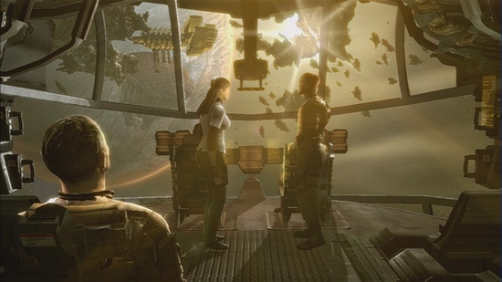
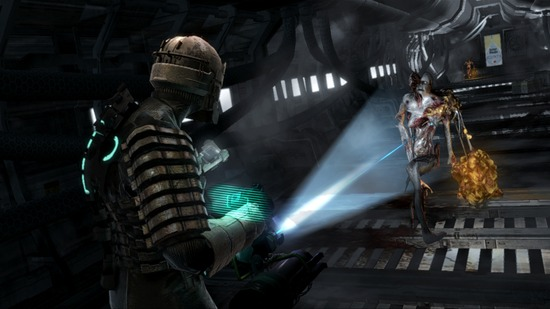
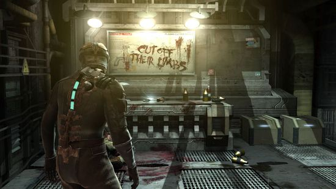
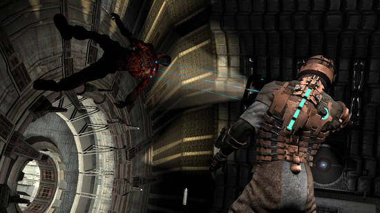

Dead Space, el shooter de terror
Aug 7, 2010 · CommentsHobbies

Hoy no voy a hablar del último videojuego del mercado, de hecho Dead Space fue lanzado en octubre del 2008. No tengo la necesidad de otros medios por hablar de las últimas novedades así que voy a mi ritmo. Pongámonos en situación, Dead Space fue desarrollado por Visceral Games (que nombre más bello) y distribuido por EA en varias plataformas: Playstation 3, X-Box 360 y PC. Venía con una promesa de lo más interesante, adaptar el género del Survival Horror a los tiempos que corren donde reinan de manera apabullante los shooters en primera persona. De esta forma, Dead Space se perfila como un shooter que casi nos hará mojar los pantalones.

La USG Ishimura está maldita
Dead Space está ambientado en un futuro en el que los humanos deben salir al espacio en busca de recursos a explotar. La nave USG Ishimura estaba encargándose del planeta Aegis 7 sufre una avería en su sistema de comunicaciones por lo que se decide enviar un equipo a ver lo ocurrido. Encargamos a Isaac Clarke, un simple ingeniero miembro del equipo enviado. Simplemente iban a detectar el problema y solucionarlo rápidamente pero lo que descubren en la Ishimura es otra cosa.
El silencio reina en la Ishimura y muchas secciones están sumidas en la oscuridad, un escenario que sirve de preámbulo a la pesadilla que van a vivir. Mutaciones y temibles engendros por todas partes que atacan y mutilan sin piedad. Parece que poco puede hacer un simple ingeniero por sobrevivir.

El soberbio trabajo de diseño
Los diseñadores han realizado un trabajo excepcional con Dead Space, muchos otros juegos trataron de mezclar el terror con la acción sin éxito. No podemos esperar que el jugador se atemorice cuando ha de encarnar a un marine hormonado, por muy oscuros que sean los escenarios. Isaac Clarke, en cambio, es un enclenque ingeniero, su ligera armadura y su cortadora de plasma poco tienen que hacer con las violentas criaturas a las que ha de enfrentarse. La sensación de agobio es constante y los estrechos pasillos de la Ishimura parecen que van a caerse sobre tí. Aquellos que piensen que Resident Evil tomó un rumbo equivocado en su cuarta y quinta entrega seguramente encuentren en Dead Space lo que buscan.
La sensación de impotencia se ve incrementada por la escasez de balas y la jugabilidad a la hora de acabar con los enemigos. No podemos, simplemente apuntar a la cabeza y disparar. Debemos dirigirnos al punto débil de cada enemigo. Si hay un engendro con largos y afilados brazos, será necesario amputárselos a balazos para dejarlo inutilizado, mas tarde podremos acabar con él cuerpo a cuerpo. Cada bala cuenta.

Ambientación
Ni que decir tiene que Dead Space es un juego bastante sangriento, el gore, las escenas grotescas y las amputaciones están a la orden del día. ¿Qué puede hacer alguien sin entrenamiento militar como Clarke ante eso? Si a tan truculento estilo le sumamos un apartado técnico bueno con grandes efectos de iluminación el resultado es una ambientación de infarto. Todos los ingredientes contribuyen al terror, por mucho que la cámara esté al hombro y a priori parezca que estamos ante un shooter.

Conclusiones
Cuando estoy redactando este análisis ya se ha anunciado la segunda entrega y se ha publicado un shooter sobre raíles en WII, Dead Space Extraction (con sus limitaciones pero que no desmerece en absoluto). Desconozco si Dead Space 2 estará al nivel de la primera, lo que sí es cierto es que la expectación ha subido por las nubes, la licencia ha ganado prestigio. Mientras tanto la primera parte es un juego altamente recomendado para los que soporten más de un susto. Un trabajo de diseño admirable junto con una ambientación de miedo.